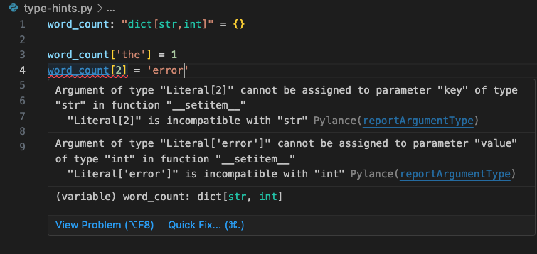

Advanced Language Features#
Learning Objectives#
Understand the use and significance of docstrings and type hints in Python for better code documentation and type-checking
Utilize introspection to inspect objects, functions, and modules
Apply decorators to modify the behaviour of functions and methods
Implement useful techniques such as casting and error handling with try-except blocks
Create and use lambda functions, list comprehensions, and generator expressions for efficient Python programming
Define and use classes in Python, including understanding inheritance and operator overloading
Annotating code#
Although Python code is readable by humans, software documentation is always required. This can take many forms and serve many different users.
Good choices of names for modules, variables and functions can help to communicate the purpose, and limitations, of your code. But if you want to share your code, or even come back to it in a few months time, it’s worth taking the trouble to include comments and docstrings.
Docstrings#
A docstring is a string literal that occurs as the first statement in a module, function, class, or method definition. Such a docstring becomes the __doc__ special attribute of that object.
All modules should normally have docstrings, and all functions and classes exported by a module should also have docstrings. Public methods (including the __init__ constructor) should also have docstrings. A package may be documented in the module docstring of the __init__.py file in the package directory.
Type-hints#
Here’s an example from the Azure Cognitive Services documentation.
can_read_data(requested_bytes: int, pos: int | None = None) -> bool
Type-hints are not enforced by Python, which can seem strange if you are more familiar with compiled languages.
Also, type-hints are evolving, although they have been available since Python 3.5 (2015) new features have been added since, with a type statement added in Python 3.12 (2023).
Docstring Exercise#
All standard Python modules have docstrings that describe the module and exported classes and functions. They can be accessed using the built-in help() function.
Here is an example docstring for the random module. Find the Python code for this module and compare the text with the help() output.
Hint: python -m site
import random
# help(random)
Introspection#
The help() function uses introspection to establish the signature of functions.
For example
def my_add_two(a):
"""
Add the value 2.0
argument:
a -- input value
return:
a + 2.0
"""
return a + 2.0
help(my_add_two)
Help on function my_add_two in module __main__:
my_add_two(a)
Add the value 2.0
argument:
a -- input value
return:
a + 2.0
## Other introspection functions
# help(dir)
# help(type)
Typing exercise#
Copy the following code fragment into your IDE. If type checking is enabled you should see a warning message.

Without making any changes, try running the code.
word_count: "dict[str,int]" = {}
word_count['the'] = 1
word_count[2] = 'error'
print(word_count)
{'the': 1, 2: 'error'}
For some projects it can be important that typing, and other, errors are caught before software is deployed. Tools such as mypy can be used to enforce these rules.
$ mypy type_hints.py
type_hints.py:4: error: Invalid index type "int" for "dict[str, int]"; expected type "str" [index]
type_hints.py:4: error: Incompatible types in assignment (expression has type "str", target has type "int") [assignment]
Found 2 errors in 1 file (checked 1 source file)
Decorators#
Another form of Python code annotation is decorators. Though there is an important distinction to be made. Decorators modify the behavior of code.
Although you can create your own decorators - they are really just functions that call other functions - you will most often encounter them as part of a toolkit or framework, i.e. software that simplifies the creation of certain types of application.
For example, the Flask web framework uses a ‘route’ decorator to associate functions that you supply with particular URLs.
@app.route('/')
def index():
return render_template('index.html')
@app.route('/about')
def about():
return render_template('about.html')
Useful techniques#
We have already seen dir() and type() for introspection
Another useful technique is
Casting#
float("6.4")
list((1,2,3))
int("12")
str() # Though print() does this by default
days = ('mon', 'tue', 'wed', 'thu', 'fri', 'sat', 'sun')
print(days[0])
# days[0] = 'Mon'
days = list(days)
days[0] = 'Mon'
print(days)
mon
['Mon', 'tue', 'wed', 'thu', 'fri', 'sat', 'sun']
try-except (and raise)#
my_num = float(input('type a number '))
If the user types text that cannot be converted to a number, then an error, or exception, occurs.
---------------------------------------------------------------------------
ValueError Traceback (most recent call last)
Cell In [9], line 1
----> 1 my_num = float(input('type a number '))
2 print(my_num)
ValueError: could not convert string to float: 'one'
These run-time errors can be caught with a ‘try-except’ clause.
Exercise#
Uncomment the following code.
Add a try-except clause to this code sample.
# my_num = float(input('type a number '))
# print(my_num)
It can be tempting to wrap parts of a program that might fail in a try-except that simply ignores the exception. This can cause many problems, and be a nightmare for others trying to use your code.
For example you might have a loop opening files, some of which contain invalid data. Using a ‘bare’ or ‘catch-all’ exception would also mask file permission errors, incorrect paths, and much more.
This doesn’t mean you shouldn’t write code that continues after an exception, just be aware that it has downsides and take the trouble to take appropriate action, such as logging the error.
import traceback
import sys
def always_bad():
'''
Throw an exception.
'''
raise Exception("Never happy")
try:
always_bad()
except Exception as e:
traceback.print_exception(type(e), value=e, tb=e.__traceback__, limit=2, file=sys.stdout)
## It is easier to use the following in most situations -
# traceback.print_exc()
print("\nCarry on regardless...")
Traceback (most recent call last):
File "/var/folders/r7/wblx0jw96hz08nvjz9p3zsgr0000gp/T/ipykernel_36774/2841111012.py", line 11, in <module>
always_bad()
File "/var/folders/r7/wblx0jw96hz08nvjz9p3zsgr0000gp/T/ipykernel_36774/2841111012.py", line 8, in always_bad
raise Exception("Never happy")
Exception: Never happy
Carry on regardless...
Lambda functions#
A lambda function is a small function that is defined with the lambda keyword. It can take any number of arguments, but can only have one expression. In other programming languages these are sometimes called anonymous functions.
add = lambda x, y: x + y
print(add(5, 3))
8
Exercise#
Write a lambda function that returns the value of its only argument if it is an odd number,or the next odd number if it is an even number.
List comprehensions#
A list comprehension is shorthand for
result = []
for x in some_list:
result.append[some_function(x)]
The input to the for statement does not need to be a list, any ‘iterable’ will do. For example a tuple, or a file.
days = [d.upper() for d in ('mon', 'tue', 'wed', 'thu', 'fri', 'sat', 'sun')]
print(days)
with open('data/rows.txt') as myFile:
lines = [x.strip().capitalize() for x in myFile]
print(lines)
['MON', 'TUE', 'WED', 'THU', 'FRI', 'SAT', 'SUN']
['Hello', 'World']
Generators#
In the previous example we used a list comprehension to capitalise all the lines in a file.
An alternative approach is to use a generator comprehension.
The syntax is almost identical, but the result seems quite different.
with open('data/rows.txt') as myFile:
lines = (x.strip().capitalize() for x in myFile)
print(lines)
<generator object <genexpr> at 0x103ca6660>
Question#
What do we need to do to get the lines from the generator?
Consuming generator output#
Although generator output can converted to a list, the intended use is with next()
with open('data/rows.txt') as data:
lines = (x.strip().capitalize() for x in data)
while True:
line = next(lines, None)
if line is None:
break
print(line)
Hello
World
Or better - use a for loop#
with open('data/rows.txt') as data:
lines = (x.strip().capitalize() for x in data)
for line in lines:
print(line)
Hello
World
yield and next()#
Although the generator comprehension and list comprehension syntax is almost identical, it is clear that the generator mechanism is quite different.
Generators in their long form are functions rather than a loop. However rather than a return statement there is a yield statement. Yield may be called as many times as you wish, indeed it could yield - FOREVER
def my_gen():
yield "hello"
yield None
# Calling a generator function from within a generator function is allowed
for i in range(3):
yield i
yield 1.414
for item in my_gen():
print(item)
hello
None
0
1
2
1.414
# Why does this fail?
# How could we fix it?
try:
with open('data/rows.txt') as data:
print(len(data))
except Exception as e:
traceback.print_exc()
Traceback (most recent call last):
File "/var/folders/r7/wblx0jw96hz08nvjz9p3zsgr0000gp/T/ipykernel_36774/679916601.py", line 5, in <module>
print(len(data))
TypeError: object of type '_io.TextIOWrapper' has no len()
# Why does this work?
# What is happening here that is different?
with open('data/rows.txt') as data:
print(list(data))
['hello\n', 'world\n']
Classes#
This course module does not cover Object Oriented Programming, or Object Oriented Design as those are both big topics. However, it is important to know that as well as the procedural style of programming the Python language also supports object orientation.
Key concepts in OOP are - objects, classes, properties, methods, constructors and inheritance. So we will take a quick look at those.
classes and objects#
A class is a user defined data type.
An object is an instance of a class.
Rather than consider the finer details of what this means, it is easier to take a look at already familiar built-in types.
the string class#
Typically we create a string with
my_string = "Hello world!"
This is actually shorthand for
my_string = str("Hello world!")
my_string = 'Hello'
print(type(my_string))
<class 'str'>
the file class#
Whenever we open a file in Python, for reading or writing, we are using a file object. However, this is a little more complicated. So let’s check the type of a file object.
my_file = open('data/rows.txt')
print(type(my_file))
my_file.close()
my_binary_file = open('data/rows.txt', 'rb')
print(type(my_binary_file))
my_binary_file.close()
<class '_io.TextIOWrapper'>
<class '_io.BufferedReader'>
This might seem surprising. On reflection, from mistakes we have all made, and learned from, when working with files - it is to be expected that there are different types of file object for text and binary files, and also for reading and writing.
So here we see the principle benefit of object oriented programming - information hiding, generally coders want a simple, and consistent, interface to things that are conceptually similar, such as files.
Defining our own classes#
Typical reasons for defining new classes are -
Encapsulation (information hiding)
Easier code re-use
my_name = "michael"
a = my_name.upper()
print(a)
print(my_name)
# or
my_name = "michael"
my_name = my_name.upper()
print(my_name)
MICHAEL
michael
MICHAEL
# or
def upper(input:str):
return input.upper()
my_name = upper("michael")
print(my_name)
MICHAEL
class Upper(str):
def __new__(cls, text=""):
return super().__new__(cls, text.upper())
my_name = Upper("michael")
print(my_name)
print(type(my_name))
MICHAEL
<class '__main__.Upper'>
Features of our new class#
Our Upper() class is an example of code re-use. We have re-used the str() class to provide the implementation of Upper(). So we gain all the features of str().
Let’s see what it can do
class Upper(str):
def __new__(cls, text=""):
return super().__new__(cls, text.upper())
## Alternative (factory) implementation
class UpperFactory(str):
def __init__(self, text=""):
str.__init__(text.upper())
hello = Upper("hello")
print(type(hello), hello)
lh = hello.lower()
print(type(lh), lh)
uh = hello.upper()
print(type(uh), uh)
<class '__main__.Upper'> HELLO
<class 'str'> hello
<class 'str'> HELLO
Pros and cons of inheritance#
We get all the methods of the super-class - GOOD, simplifies implementation
We get all the methods of the super-class - BAD, methods not adapted to features of our new class
For now, just note that designing and implementing well behaved classes is not trivial, and filling your code with custom classes might not be what others (or future you) will appreciate.
Operator overloading#
Although a separate concept to classes, and object orientation, a common feature of object oriented programming languages is operator overloading. This is something that you will already be familiar with from Python strings.
print('hello' + ' ' + 'world')
print(11 * '_')
hello world
___________
Let’s implement something similar for our Upper class -
class Upper(str):
def __new__(cls, text=""):
return super().__new__(cls, text.upper())
def __add__(self, x):
return Upper(str(self) + "_" + x)
print(Upper("hello") + "world")
HELLO_WORLD
How about this -
print("hello" + Upper("world"))
helloWORLD
Oh no!!
Exercise#
Fix it!